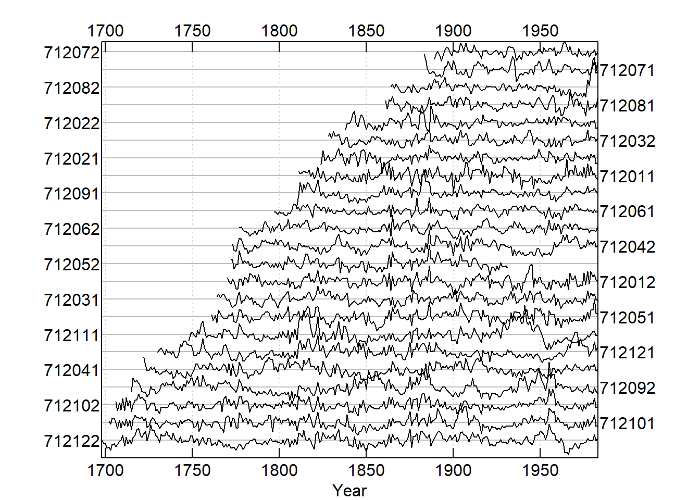
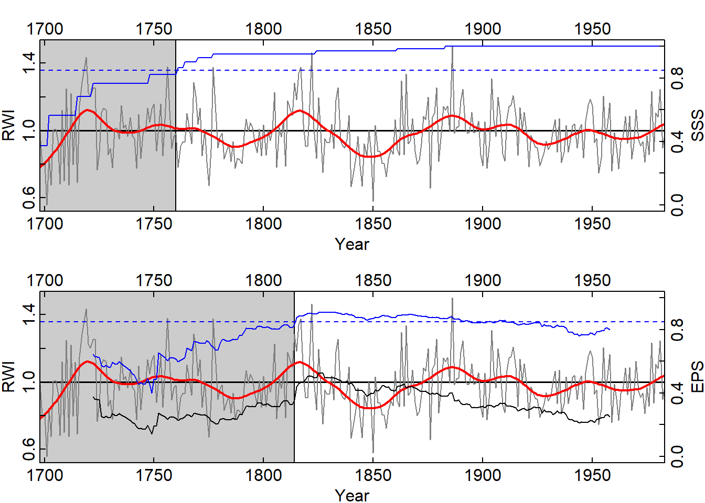

Lab: Post-processing and statistics of dendrochronological series
During this exercise, we will standardize tree-ring series, develop a master-chronology, calculate descriptive statistics and produce relevant plots in R.
We will use the package dplR.
Reference: Bunn AG (2008). A dendrochronology program library in R (dplR). Dendrochronologia, 26(2), 115-124 (URL: https://doi.org/10.1016/j.dendro.2008.01.002).
Reference: Bunn AG (2010). Statistical and visual crossdating in R using the dplR library. Dendrochronologia, 28(4), 251-258 (URL: https://doi.org/10.1016/j.dendro.2009.12.001).
Data
For this exercise, we will use the rwl data of raw ring widths for Pacific silver firs (Abies amabilis) at Hurricane Ridge in the State of Washington, USA. These data include 23 series covering 286 years and are directly available with the dplR package as test dataset.
We will start loading the required packages and the data.
library(dplR)
data(wa082)
str(wa082)## Classes 'rwl' and 'data.frame': 286 obs. of 23 variables:
## $ 712011: num NA NA NA NA NA NA NA NA NA NA ...
## $ 712012: num NA NA NA NA NA NA NA NA NA NA ...
## $ 712021: num NA NA NA NA NA NA NA NA NA NA ...
## $ 712022: num NA NA NA NA NA NA NA NA NA NA ...
## $ 712031: num NA NA NA NA NA NA NA NA NA NA ...
## $ 712032: num NA NA NA NA NA NA NA NA NA NA ...
## $ 712041: num NA NA NA NA NA NA NA NA NA NA ...
## $ 712042: num NA NA NA NA NA NA NA NA NA NA ...
## $ 712051: num NA NA NA NA NA NA NA NA NA NA ...
## $ 712052: num NA NA NA NA NA NA NA NA NA NA ...
## $ 712061: num NA NA NA NA NA NA NA NA NA NA ...
## $ 712062: num NA NA NA NA NA NA NA NA NA NA ...
## $ 712071: num NA NA NA NA NA NA NA NA NA NA ...
## $ 712072: num NA NA NA NA NA NA NA NA NA NA ...
## $ 712081: num NA NA NA NA NA NA NA NA NA NA ...
## $ 712082: num NA NA NA NA NA NA NA NA NA NA ...
## $ 712091: num NA NA NA NA NA NA NA NA NA NA ...
## $ 712092: num NA NA NA NA NA NA NA NA NA NA ...
## $ 712101: num NA NA NA NA 1.99 1.7 2.31 2.23 1.8 1.23 ...
## $ 712102: num NA NA NA NA NA NA NA NA 2.06 1.18 ...
## $ 712111: num NA NA NA NA NA NA NA NA NA NA ...
## $ 712121: num NA NA NA NA NA NA NA NA NA NA ...
## $ 712122: num 1.47 1.18 1.19 0.82 0.9 0.63 1.08 1.14 0.92 1.06 ...1. Standardization and descriptive statistics
(1a). Use the function summary of dplR to compute descriptive statistics of individual tree-ring series. From the results, compute the mean sample length, the mean standard deviation, the mean tree-ring width, and the mean first order autocorrelation.
(1b). Use the function interseries.cor of dplR to compute the individual series correlation against the master chronology and obtain the mean value.
(1c). Visualize rapidly the data with dplR. Plot the time spans of individual series (function seg.plot; segment plot) and visualize all tree-ring width series (function spag.plot; spaghetti plot).

(1d). Standardize the data detrending each series with a spline that has a frequency response of 50% at a wavelength of 2/3 of each series’s length. This step transforms tree-ring widths in indexes. To achieve this step, use the function detrend of dplR with the option method=“Spline”. Finally visualize the spaghetti plot of these new data and compare this plot with the previous one obtained in (1c).

2. Chronology building and descriptive statistics
(2a). Build a mean-value chronology by averaging the rows of the rwi data using a Tukey’s biweight robust mean. To achieve this step, use the function chron of dplR. You can assign a name to the chronology by using the optpion prefix. Explore the obtained chronology dataframe and plot the chronology (function plot) superimposing a 30-year smoothing spline for visualization (option add.spline=TRUE, nyrs=30).
(2b). Compute standard statistics for chronologies with dplR. The first step is to correctly assign site, tree, and core IDs to each sample composing the chronology from the rwl data.frame (use the function autoread.ids of dplR). Then you compute standard statistics with the function rwi.stats.running. You should specify site, tree, and core IDs of each sample and the window overlap (window.overlap) of contiguous 50 year blocks where the statistic are computed. The result is a data.frame containing the following columns:
n = the average number of trees (for each year, a tree needs at least one non-NA core in order to be counted).
n.tot = total number of correlations calculated as n.wt + n.bt.
rbar.tot = the mean of all the correlations between different cores
rbar.wt = the mean of the correlations between series from the same tree over all trees
rbar.bt = the mean interseries correlation between all series from different trees
c.eff = the effective number of cores (takes into account the number of within-tree correlations in each tree)
rbar.eff = the effective signal calculated as rbar.bt / (rbar.wt + (1-rbar.wt) / c.eff)
eps = the expressed population signal calculated using the average number of trees as n x rbar.eff / ((n - 1) x rbar.eff + 1)
snr = the signal to noise ratio calculated using the average number of trees as n x rbar.eff / (1-rbar.eff)
(2c). Compute the subsample signal strength (SSS; n[1+(N-1)rbar]/N[1+(n-1)rbar]) using the function sss of dplR.
(2d). Plot the chronology showing a potential cutoff year based on SSS or on EPS
# Plot cutoff
yrs <- time(wa082.crn)
op <- par(no.readonly=TRUE)
par(mar = c(2, 2, 2, 2), mgp = c(1.1, 0.1, 0), tcl = 0.25,mfcol = c(2, 1), xaxs='i')
plot(yrs, wa082.crn[, 1], type = "n", xlab = "Year",ylab = "RWI", axes=FALSE)
cutoff <- max(yrs[wa082.sss < 0.85])
xx <- c(500, 500, cutoff, cutoff)
yy <- c(-1, 3, 3, -1)
polygon(xx, yy, col = "grey80")
abline(h = 1, lwd = 1.5)
lines(yrs, wa082.crn[, 1], col = "grey50")
lines(yrs, ffcsaps(wa082.crn[, 1], nyrs = 30), col = "red", lwd = 2)
axis(1); axis(2); axis(3);
par(new = TRUE)
## Add SSS
plot(yrs, wa082.sss, type = "l", xlab = "", ylab = "",axes = FALSE, col = "blue",ylim=c(0,1))
abline(h=0.85,col="blue",lty="dashed")
axis(4)
mtext("SSS", side = 4, line = 1.1)
box()
# Plot cutoff2
plot(yrs, wa082.crn[, 1], type = "n", xlab = "Year",ylab = "RWI", axes=FALSE)
cutoff <- min(wa082.ids.stats$mid.year [wa082.ids.stats$eps> 0.85])-1
xx <- c(500, 500, cutoff, cutoff)
yy <- c(-1, 3, 3, -1)
polygon(xx, yy, col = "grey80")
abline(h = 1, lwd = 1.5)
lines(yrs, wa082.crn[, 1], col = "grey50")
lines(yrs, ffcsaps(wa082.crn[, 1], nyrs = 30), col = "red", lwd = 2)
axis(1); axis(2); axis(3);
par(new = TRUE)
## Add EPS
plot(wa082.ids.stats$mid.year, wa082.ids.stats$eps, type = "l", xlab = "", ylab = "",axes = FALSE, col = "blue",xlim=range(yrs),ylim=c(0,1))
abline(h=0.85,col="blue",lty="dashed")
axis(4)
mtext("EPS", side = 4, line = 1.1)
box()
par(new = TRUE)
plot(wa082.ids.stats$mid.year, wa082.ids.stats$rbar.eff, type = "l", xlab = "", ylab = "",axes = FALSE, col = 1,xlim=range(yrs),ylim=c(0,1))